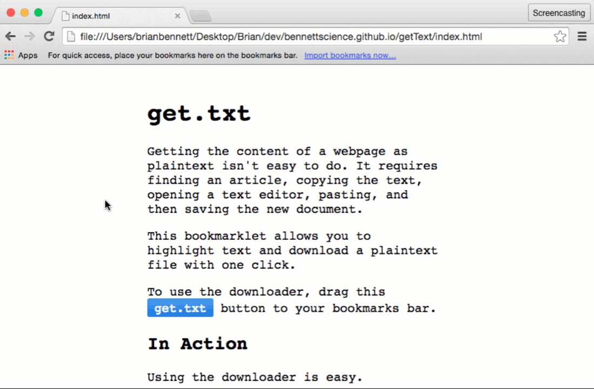
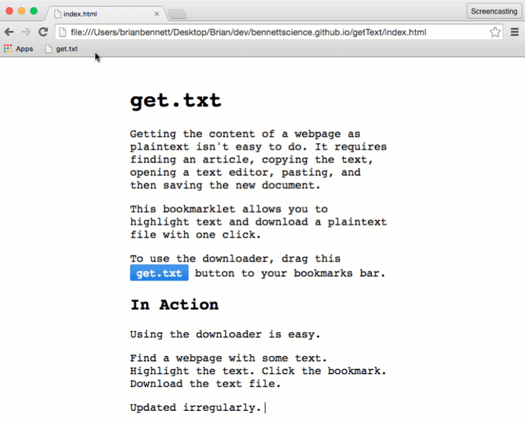

I built this to grab text for an online text analyzer which requires ASCII encoding. The script now automatically converts UTF-8 strings (most web pages) into ASCII before downloading.
The change is in the background, so if you already were using the bookmarklet, you don't need to do anything to get the update.
You can see the updates to the source on GitHub.
|Getting the content of a webpage as plaintext isn't easy to do. It requires finding an article, copying the text, opening a text editor, pasting, and then saving the new document.
This bookmarklet allows you to highlight text and download a plaintext file with one click.
To use the downloader, drag this get.txt button to your bookmarks bar.
Using the downloader is easy.
Find a webpage with some text. Highlight the text. Click the bookmark. Download the text file.
Updated irregularly.